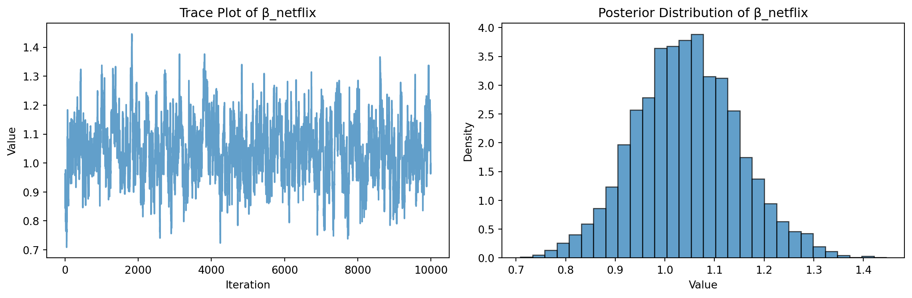

This research paper explores two methods for estimating the MNL model: (1) via Maximum Likelihood, and (2) via a Bayesian approach using a Metropolis-Hastings MCMC algorithm.
1. Likelihood for the Multi-nomial Logit (MNL) Model
Suppose we have \(i=1,\ldots,n\) consumers who each select exactly one product \(j\) from a set of \(J\) products. The outcome variable is the identity of the product chosen \(y_i \in \{1, \ldots, J\}\) or equivalently a vector of \(J-1\) zeros and \(1\) one, where the \(1\) indicates the selected product. For example, if the third product was chosen out of 3 products, then either \(y=3\) or \(y=(0,0,1)\) depending on how we want to represent it. Suppose also that we have a vector of data on each product \(x_j\) (eg, brand, price, etc.).
We model the consumer’s decision as the selection of the product that provides the most utility, and we’ll specify the utility function as a linear function of the product characteristics:
\[ U_{ij} = x_j'\beta + \epsilon_{ij} \]
where \(\epsilon_{ij}\) is an i.i.d. extreme value error term.
The choice of the i.i.d. extreme value error term leads to a closed-form expression for the probability that consumer \(i\) chooses product \(j\):
A clever way to write the individual likelihood function for consumer \(i\) is the product of the \(J\) probabilities, each raised to the power of an indicator variable (\(\delta_{ij}\)) that indicates the chosen product:
We will simulate data from a conjoint experiment about video content streaming services. We elect to simulate 100 respondents, each completing 10 choice tasks, where they choose from three alternatives per task. For simplicity, there is not a “no choice” option; each simulated respondent must select one of the 3 alternatives.
Each alternative is a hypothetical streaming offer consistent of three attributes: (1) brand is either Netflix, Amazon Prime, or Hulu; (2) ads can either be part of the experience, or it can be ad-free, and (3) price per month ranges from $8 to $32 in increments of $4.
The part-worths (ie, preference weights or beta parameters) for the attribute levels will be 1.0 for Netflix, 0.5 for Amazon Prime (with 0 for Hulu as the reference brand); -0.8 for included adverstisements (0 for ad-free); and -0.1*price so that utility to consumer \(i\) for hypothethical streaming service \(j\) is
where the variables are binary indicators and \(\varepsilon\) is Type 1 Extreme Value (ie, Gumble) distributed.
The following code provides the simulation of the conjoint data.
import numpy as npimport pandas as pdnp.random.seed(123)brands = ["N", "P", "H"] # Netflix, Prime, Huluads = ["Yes", "No"]prices = np.arange(8, 36, 4) profiles = pd.DataFrame( [(b, a, p) for b in brands for a in ads for p in prices], columns=["brand", "ad", "price"])m =len(profiles)b_util = {"N": 1.0, "P": 0.5, "H": 0.0}a_util = {"Yes": -0.8, "No": 0.0}p_util =lambda p: -0.1* pn_peeps =100n_tasks =10n_alts =3def simulate_one_respondent(resp_id): respondent_data = []for task_id inrange(1, n_tasks +1): sampled_profiles = profiles.sample(n=n_alts, replace=False).copy() sampled_profiles["resp"] = resp_id sampled_profiles["task"] = task_id sampled_profiles["v"] = ( sampled_profiles["brand"].map(b_util) + sampled_profiles["ad"].map(a_util) + sampled_profiles["price"].apply(p_util) ) sampled_profiles["e"] =-np.log(-np.log(np.random.uniform(size=n_alts))) sampled_profiles["u"] = sampled_profiles["v"] + sampled_profiles["e"] sampled_profiles["choice"] = (sampled_profiles["u"] == sampled_profiles["u"].max()).astype(int) respondent_data.append(sampled_profiles)return pd.concat(respondent_data, ignore_index=True)conjoint_data = pd.concat( [simulate_one_respondent(i) for i inrange(1, n_peeps +1)], ignore_index=True)conjoint_data = conjoint_data[["resp", "task", "brand", "ad", "price", "choice"]]conjoint_data.head()
resp
task
brand
ad
price
choice
0
1
1
P
No
32
0
1
1
1
N
No
28
0
2
1
1
N
No
24
1
3
1
2
H
No
28
0
4
1
2
H
No
8
1
3. Preparing the Data for Estimation
The “hard part” of the MNL likelihood function is organizing the data, as we need to keep track of 3 dimensions (consumer \(i\), covariate \(k\), and product \(j\)) instead of the typical 2 dimensions for cross-sectional regression models (consumer \(i\) and covariate \(k\)). The fact that each task for each respondent has the same number of alternatives (3) helps. In addition, we need to convert the categorical variables for brand and ads into binary variables.
The code above prepares the simulated conjoint data for estimating a Multinomial Logit (MNL) model. It performs one-hot encoding for categorical variables, selects the relevant columns, assigns a unique choice set ID for each respondent-task combination, and constructs the feature matrix (X) and target vector (y). This reshaped and encoded data is now ready to be used in Maximum Likelihood and Bayesian estimation of the MNL model.
4. Estimation via Maximum Likelihood
Here, we create the log-likelihood function of a Multinomial Logit (MNL) model.
def mnl_log_likelihood(beta, X, y, choice_set_ids): utilities = X @ beta log_likelihood =0.0 unique_sets = np.unique(choice_set_ids)for s in unique_sets: idx = (choice_set_ids == s) u_s = utilities[idx] y_s = y[idx] max_u = np.max(u_s) denom = np.log(np.sum(np.exp(u_s - max_u))) + max_u numer = u_s[y_s ==1][0] log_likelihood += numer - denomreturn-log_likelihood
Then, we use scipy.optimize() to find the MLEs for the 4 parameters (\(\beta_\text{netflix}\), \(\beta_\text{prime}\), \(\beta_\text{ads}\), \(\beta_\text{price}\)), as well as their standard errors (from the Hessian). Notes that for each parameter, we construct a 95% confidence interval.
Current function value: 863.578335
Iterations: 15
Function evaluations: 237
Gradient evaluations: 45
beta_netflix: 1.0569 (SE = 0.1108), 95% CI = [0.8397, 1.2741]
beta_prime: 0.4733 (SE = 0.1168), 95% CI = [0.2444, 0.7022]
beta_ads: -0.7724 (SE = 0.1869), 95% CI = [-1.1388, -0.4060]
beta_price: -0.0964 (SE = 0.0062), 95% CI = [-0.1087, -0.0842]
/Library/Frameworks/Python.framework/Versions/3.13/lib/python3.13/site-packages/scipy/optimize/_minimize.py:733: OptimizeWarning: Desired error not necessarily achieved due to precision loss.
res = _minimize_bfgs(fun, x0, args, jac, callback, **options)
From the above result, it shows that all estimates are very close to the true part-worth used in the simulation. The 95% confidence intervals cover the true values in every case, indicating a good MLE model fit and estimator accuracy. Besides, “OptimizeWarning: Desired error not necessarily achieved due to precision loss” suggests that the model encountered slight numerical precision issues during convergence. However, the overall estimated results remain valid and interpretable for analysis.
5. Estimation via Bayesian Methods
In this section, we create a metropolis-hasting MCMC sampler of the posterior distribution by taking 11,000 steps and throwing away the first 1,000, retaining the subsequent 10,000. Also, we use N(0,5) priors for the betas on the binary variables, and a N(0,1) prior for the price beta. In order to re-use the log-likelihood function from the MLE section above, we’ll work in the log-space and calculate log-post = log-lik + log-prior. Furthermore, we use a multivariate normal distribution with a diagonal covariance matrix to propose the next location for the algorithm to move to.
Then, for at least one of the 4 parameters, we show the trace plot for the algorithm, as well as the histogram of the posterior distribution.
import matplotlib.pyplot as pltparam_index =0param_samples = posterior_samples[:, param_index]plt.figure(figsize=(12, 4))plt.subplot(1, 2, 1)plt.plot(param_samples, alpha=0.7)plt.title("Trace Plot of β_netflix")plt.xlabel("Iteration")plt.ylabel("Value")plt.subplot(1, 2, 2)plt.hist(param_samples, bins=30, density=True, alpha=0.7, edgecolor='black')plt.title("Posterior Distribution of β_netflix")plt.xlabel("Value")plt.ylabel("Density")plt.tight_layout()plt.show()

Analysis for B:
The trace plot and histogram of the posterior distribution indicate that the MCMC sampler is functioning correctly. The trace plot for β_netflix shows stable convergence and good mixing, suggesting that the sampler effectively explored the posterior distribution. Additionally, the posterior distribution is centered closely around the true parameter value, indicating that the Bayesian estimation is both valid and precise.
C.
Here, we report the posterior means, standard deviations, and 95% credible intervals for each of the four parameters.
Bayesian Posterior Estimates:
beta_netflix: mean = 1.0439, std = 0.1050, 95% CI = [0.8394, 1.2625]
beta_prime: mean = 0.4565, std = 0.1049, 95% CI = [0.2595, 0.6633]
beta_ads: mean = -0.7654, std = 0.0910, 95% CI = [-0.9403, -0.5899]
beta_price: mean = -0.0965, std = 0.0060, 95% CI = [-0.1079, -0.0844]
Analysis for C:
From the above estimated results, the Bayesian posterior means are very close to the MLE estimates for all four parameters, confirming consistency between the two approaches. In the meantime, the Bayesian posterior standard deviations and credible intervals align well with the MLE’s standard deviations and confidence intervals. Also, all estimated parameters are statistically significant as both methods’ estimates are very close to the true part-worth used in the simulation. Overall, these results indicate the validity and precision of both Maximum Likelihood and Bayesian methods in the MNL modeling.
6. Discussion
A.
Suppose the situation that we didn’t simulate the data, we can observe that the parameter estimates sill provide meaningful and reasonable interpretations of consumer’s preferences among four parameters. \(\beta_\text{Netflix} > \beta_\text{Prime}\) means that consumers prefer Netflix over Amazon while keeping all other attributes remain constant. Additionally, it does make sense \(\beta_\text{price}\) is negative because when the price of a streaming service increases, its utility will decreases, making consumers less likely to choose it. This case aligns with consumers behaviors.
B.
Furthermore, at a high level, in order to stimulate data from — and estimate the parameters of — a multi-level (aka random-parameter or hierarchical) model, we will need to consider variation in the preferences across individuals. In contrast to the MNL model, which uses one fixed set of part-worths(β) shared by all individuals, the multi-level model allows each variable to have their own unique set of βs, which are sampled from a broader distribution. The multi-level model captures the “real world” conjoint data well, where different consumers can value attributes of brands, ads, or price differently, leading to more personalized and targeted analysis.